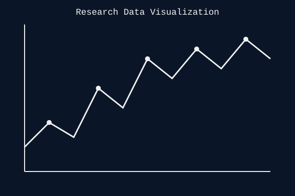
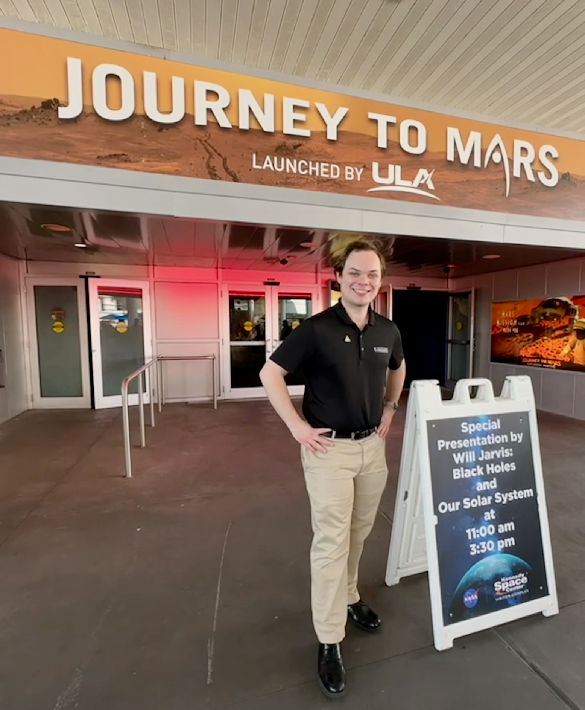

Outreach
Public Engagement
One of the highlights of being an astronomer is getting to interact with the public. Astronomy offers a unique opportunity to connect with people who might otherwise be scared or put-off from science. Using a combination of hands-on observing and craft activities, we can show kids (of ALL ages) a little bit more about the universe and the principles of science.

Speaking Highlight: the Northeast Astronomy Forum and Space Expo
On April 11-12, I was honored to visit and speak at the Northeast Astronomy Forum and Space Expo. The expo is a wonderful opportunity for the general public and amateur astronomers to meet astronauts, telescope makers, and scientists. Throughout the weekend, notable astronauts including Anna Fischer, Hoot Gibson, and Don Pettit, as well as Apollo Flight Director Gerry Griffin, and astronomer Michelle Thaller spoke about their lives and experiences. I was there representing the Astronaut Scholarship Foundation and lecturing on the exciting first few years of science from the James Webb Space Telescope.
Over the weekend, I was able to speak to hundreds of enthusiastic people and answer their toughest questions. How do you radio telescopes work? What happens to a black hole? Are we made of black holes? Are aliens real? If you were abducted by an alien, how would you know? Okay, I may not have had answers to all their questions, but I tried to answer as many as I could.
Every time I am lucky enough to speak at an event like this, it reminds me why I am an astronomer: every day, I am closer to knowing "why are we here?" "Why are we on planet Earth?" People, from the youngest of awed children seeing an image of a planet orbiting a different star to adults chasing the sci-fi fantasies of their youth, just want to understand their place in this big universe. It fills me with joy to be able to contribute just a wee bit to that purpose.
Educational Activities
- Public observatory nights
- School presentations
- Science festival participation
- Public Science Talks


Community Involvement
From 2022-2023, I served as event coordinator and then President of the University of Wisconsin - Madison Astronomy Club. I expanded the club's membership, quadrupling our active members from ~10 to more than 40, with more than 150 members who frequently attended observing nights. One of my priorities was developing the skills necessary to do outreach work in public schools. We trained ~15 students how to use telescopes and do space-related arts and crafts. We used these skills to start a range of outreach events, reaching more than 4,000 people in schools and in the public around Madison, WI.
Talks and Presentations
I have spoken publicly at many different places. Here is a small list:
- “Telling Time, Distances, and History: The 5000-Year Story of Recorded Eclipses.” Kennedy Space Center, April 2024.
- “Monstrous Black Holes and Growing Galaxies.” Kennedy Space Center. April 2024.
- “What Changed First: The Galaxy or the Black Hole?” Karben4 Brewing. Astronomy on Tap. April 2024.
- “Supernovae Throughout History.” Virtual Lecture at the Online Moon Over Monona Terrace Star Party. October 2020.